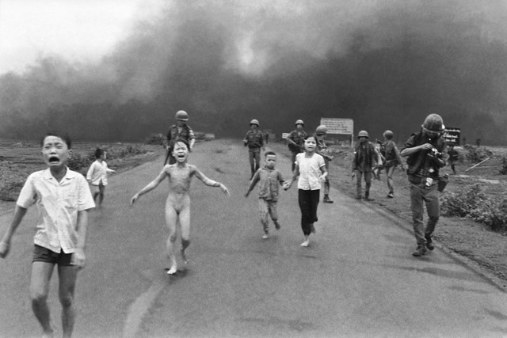
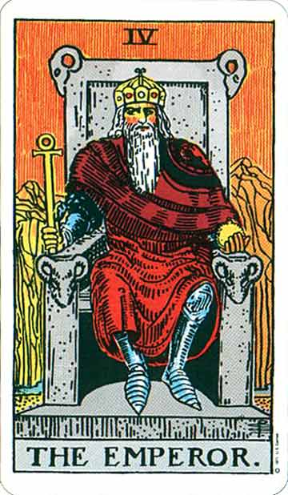
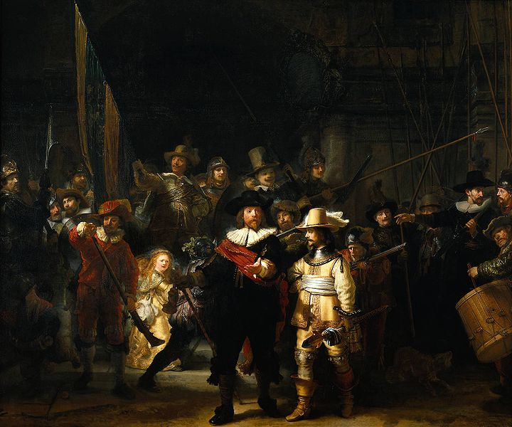

Letras traducidas
Letras traducidas
|
|
|
Las notas marcadas con asterisco (*), son fragmentos del libro King Crimson: crónica de un malestar, de Alejandro Díaz Varón, que contó con la colaboración de Peter Sinfield. King Crimson: 21st Century schizoid man (Hombre esquizoide del siglo 21) (Sinfield) cd: In the court of the Crimson King Pata de gato, garra de hierro, los neurocirujanos claman por más, a la puerta del veneno de la paranoia, hombre esquizoide del siglo 21. Tormento sangriento con alambre de púas, pira funeraria de políticos, inocentes violados con el fuego del napalm, hombre esquizoide del siglo 21. La ciega codicia del hombre siembra la muerte. Los poetas mueren de hambre, los niños sangran. Nada de lo que tiene lo necesita realmente, hombre esquizoide del siglo 21. [nota: la segunda estrofa se refiere a la guerra de Vietnam, en pleno desarrollo en ese momento, donde el ejército yanqui usaba napalm, una sustancia gelatinosa incendiaria. Antes de tocar este tema en un recital en USA en diciembre de 1969, Fripp se la dedicó sarcásticamente a Spiro Agnew, vicepresidente estadounidense, principal defensor de la guerra llevada adelante por su país. Casi 3 años después de grabar el album, en junio de 1972, el reportero Nick Ut de la agencia Associated Press, tomó y difundió la foto mostrada abajo; retrata el escape dramático de niños vietnamitas, algunos con quemaduras, de un ataque yanqui con napalm. La imagen se hizo famosa mundialmente por mostrar con crudeza el horror de esa guerra. La alusión a los poetas tal vez signifique avizorar el fin de la poesía en el mundo.]  I talk to the wind (Le hablo al viento) (Sinfield) cd: In the court of the Crimson King Le dijo el hombre recto al hombre demorado: - ¿Dónde has estado? - Estuve aquí, estuve allá, y estuve en el medio. Le hablo al viento. Todas mis palabras son llevadas lejos. Le hablo al viento. El viento no escucha, el viento no puede escuchar. Estoy en el exterior mirando hacia adentro. ¿Qué es lo que veo? Mucha confusión, desilución todo a mi alrededor. Tú no me posees, no me impresionas, solo desarreglas mi mente. No puedes enseñarme o conducirme, solo malgastas mi tiempo. Le hablo al viento. Todas mis palabras son llevadas lejos. Le hablo al viento. El viento no escucha, el viento no puede escuchar. [nota: hermosa forma
de expresar la rebeldía; ¿es el diálogo entre un jefe y su empleado?. Por
otro lado: ¿es una
solapada respuesta al famoso tema de Bob Dylan de 1963 Blowin'
in the Wind, que dice que la respuesta a preguntas hechas en la canción
sobre injusticias del mundo actual está soplando en el viento?] Epitaph (Epitafio) (Sinfield) cd: In the court of the Crimson King El muro en el cual escribieron los profetas está crujiendo en los cimientos. Sobre los instrumentos de la muerte centellea brillantemente la luz del sol. Cuando cada hombre está aislado y desgarrado con pesadillas y sueños nadie colocará la corona de laurel, mientras el silencio ahoga los gritos. Entre las puertas de hierro del destino, las semillas del tiempo fueron sembradas y regadas por las acciones de aquellos que saben y son conocidos. El conocimiento es un amigo mortal cuando nadie fija las reglas. Veo que el destino de toda la humanidad está en manos de tontos. "Confusión" será mi epitafio, en tanto me arrastro por un camino rajado y partido. Si lo logramos, todos podremos volver a sentarnos y reír. Pero temo que mañana estaré llorando. Sí, temo que mañana estaré llorando.
[nota1: la frase "El conocimiento es un amigo mortal cuando nadie fija las reglas" es una poética y temprana reflexión sobre temas como la ética y la ciencia, el desarrollo tecnológico en manos de un puñado de poderosos inescrupulosos, etc.; recordemos que en ese entonces estaba en pleno desarrollo la "guerra fría", durante la cual en cualquier momento, con solo apretarse un botón, podía comenzar la tercera guerra mundial, nuclear.] [nota 2: Peter Sinfield en cierta ocasión dijo que había escrito la letra tras leer el periódico y ver el estado del mundo, y que esto unido a un momento personal de indecisión, confusión y desánimo explican en gran parte sus contenidos.] *
Moonchild (Niña luna) (Sinfield) cd: In the court of the Crimson King Llámala niña luna, bailando en la superficie de un río. Solitaria niña luna, soñando bajo la sombra del sauce. Hablando a los árboles de la extraña telaraña, durmiendo sobre los escalones de una fuente, ondeando varas de plata hacia la canción de los pájaros nocturnos, esperando por el sol sobre la montaña. Ella es una niña luna, recogiendo las flores de un jardín. Adorada niña luna, flotando en los ecos de las horas. Navegando en el viento en un vestido de blanco leche, soltando piedras en círculo sobre un reloj de sol, jugando a las escondidas con los fantasmas del alba, esperando por una sonrisa de un niño sol.
[nota 1: reconciliar los opuestos, en este caso el sol y la luna (símbolos en las civilizaciones antiguas de lo masculino y lo femenino), para llegar al equilibrio, sería un tema recurrente que abordaría KC en distintas épocas y con diferentes formaciones. Ejemplos: la letra del tema In the wake of Poseidon (1970), las tapas de los discos Larks' tongues in aspic (1973) y Three of a perfect pair (1984).] [nota 2: la luna y el sol son cartas del tarot, al cual Sinfield era aficionado.]
(Sinfield) cd: In the court of the Crimson King Las cadenas oxidadas de lunas prisioneras son destrozadas por el sol. Recorro un camino, los horizontes cambian. El torneo comenzó. El flautista púrpura toca su melodía. El coro canta suavemente tres canciones de cuna en una antigua lengua para la corte del rey Carmesí. El guardián de las llaves de la ciudad pone cerrojos a los sueños. Espero fuera de la puerta de los peregrinos con plan insuficiente. La reina de negro canta la marcha fúnebre. Las rotas campanas de bronce sonarán para convocar a la bruja del fuego hacia la corte del rey Carmesí. El jardinero planta un siempreverde mientras pisa una flor. Persigo el viento de una nave prisma para probar lo dulce y lo amargo. El malabarista alza su mano, la orquesta comienza, tan lento como el compás de la rueda del molino en la corte del rey Carmesí. En suaves mañanas grises las viudas lloran, los hombres sabios comparten una broma. Me apresuro a captar augurios para complacer el engaño. El bufón amarillo no toca, pero suavemente tira de las cuerdas y sonríe por la danza de los títeres, en la corte del rey Carmesí.

[nota 1: en la primera estrofa vuelven a aparecer los mismos opuestos nombrados en el tema anterior.]
[nota 2: Sinfield creó el germen de este tema, influenciado por Bob Dylan y Donovan, pero admite que sin Ian MacDonald la canción jamás habría existido. El lector debe estar alerta porque puede llevarse a engaño al pensar que tan solo es una visión pintoresca de una corte real imaginaria. Al leer repetidamente uno empieza a descubrir que “algo” se mueve detrás de esa “inocua” fachada. Por un lado, unas paradojas encantadoramente suaves, y por otro, sutiles e irónicos destellos de otra realidad debajo del colorido y la puesta en escena. Todo para recordarnos las estructuras del poder político en épocas pasadas, que tampoco difieren tanto de las actuales. En todas las épocas el poder ha supuesto manipulación y opresión. El mismo énfasis en la intemporalidad de ciertas conductas humanas, es decir, en los comportamientos arquetípicos. Aquí la Corte de Rey Carmesí es la sociedad, y ese paisaje de arquetipos es el verdadero trasfondo de esta canción. Por poner sólo dos ejemplos, Sinfield identifica a la bruja de fuego con un vendedor de armas y él mismo se ve reflejado en el bufón, personaje importante en la evolución del mundo de la escena en occidente.] *
[nota
3: aquí también aparecen cartas de tarot. La principal es El emperador,
y se relaciona con el nombre de la banda: Según Peter Sinfield, el nombre del grupo fue invención suya. Es posible que influido por la lectura del
famoso libro El rey de amarillo (1895) del norteamericano R.W. Chambers
(1865-1933). Explica que él quería un nombre que sonara con autoridad y presencia. Basándose en la carta
El Emperador del tarot, asoció la palabra rey con el color carmesí del manto que lleva el Emperador. A Fripp le gustó porque
estaba interesado en el tarot también. La carta del Emperador es una carta de poder y autoridad que tiene
relaciones remotas con la figura del omnipotente Zeus griego y el Júpiter latino, y que es claro precedente
de la idea de un Dios único. Fripp, sin embargo, siempre relacionó el nombre con Belcebú, nombre de
origen árabe que literalmente significa: “hombre con un objetivo”.] *
Tanto el tarot como los arquetipos volverían a aparecer en la letra del tema In the wake of Poseidon, del album siguiente.
Peace, a beginning (Paz, un comienzo) (Sinfield) cd: In the wake of Poseidon Soy el océano iluminado por el fuego, soy la montaña. Paz es mi nombre. Soy el río tocado por el viento. Soy la historia, nunca termino. (Sinfield) cd: In the wake of Poseidon Paz es la palabra del mar y del viento. Paz es un pájaro que canta mientras sonríes. Paz es el amor de un enemigo así como el de un amigo. Paz es el amor que brindas a un niño. Buscándome miras en todas partes, excepto cerca tuyo. Buscándote miras en todas partes, pero no en tu interior. Paz es un torrente desde el corazón de un hombre. Paz es un hombre, cuya amplitud es el amanecer. Paz es el amanecer en un día sin final. Paz es el final, como la muerte, de la guerra. Pictures of a city (Imágenes de una ciudad) (Sinfield) cd: In the wake of Poseidon Frío rostro de hormigón encajonado en acero. Punzante y penetrante ojo de vidrio que agrieta y desnuda. Luz brillante, grito, viga, freno y chirrido. Rojo, blanco, verde, blanco, rueda de neón. Ilusión de amor carnal persigue piel perfumada. Manos engrasadas, dientes ocultos, pecados teñidos. Danza de hielo picante arriesga sonrisa enfermiza. Cartón-propaganda, girar y sudar. Bastón de ciego, ciego borracho que no puede ver. Boca seca, lengua atada que no puede hablar. Hormigón, sueño carnal, caparazón rota. El alma perdida, la huella perdida, perdido en el infierno.
[nota:
El génesis de la letra es la primera gira de King Crimson en Estados Unidos en
1969 y, más concretamente, el contacto de Sinfield con la ciudad de Nueva York. Hay en la canción un enfoque
In the wake of Poseidon (En la estela de Poseidón)
(Sinfield) cd: In the wake of Poseidon
Prole de Platón, fríos ojos de hiedra,
manipulan la verdad con huesos y bolas de cristal.
[nota 2: Como siempre en Sinfield, hay una vivencia concreta que da nacimiento a la letra. En esta ocasión, fue que consultó a un adivino que leía las cartas del tarot. El adivino le puso encima de la mesa los doce arquetipos o cartas y le dijo que representaban a los doce tipos de hombres existentes. A nuestro letrista le dijo que él tenía mucho de la carta de la encantadora y el bufón. Algo que ya Sinfield había intuido por sí mismo como vemos en la canción En la corte del Rey Carmesí, donde él mismo se identificaba con el arquetipo del bufón. Interesado por este tema, conoció a Tammo de Jongh, autor de la portada del disco. La conexión entre la portada del disco y la letra es muy estrecha. Todos los arquetipos presentes en la cubierta son mencionados (el bufón -el arlequín-, el héroe, el esclavo, el rey mago, Platón, el loco, la bruja de la cosecha, la encantadora -Reina de la Medianoche-, la actriz -Escarlata Pantalla-, la niña, el anciano, la madre naturaleza). Pero no sólo se nombran los arquetipos, sino que son agrupados en seis parejas de opuestos: 1) la bruja de la cosecha simboliza la previsión, la seguridad y el ahorro / el loco simboliza la despreocupación. 2) Platón (según Sinfield) simboliza al frío pensador / Escarlata Pantalla a la actriz toda emoción y sentimiento. 3) El héroe simboliza al guerrero y hombre de acción / el bufón al entretenedor pacífico. 4) El rey simboliza el poder / el esclavo simboliza la sumisión. 5) La niña simboliza la juventud e inocencia / el anciano la experiencia. 6) El rey mago simboliza al científico / La madre tierra a nuestra castigada naturaleza y a la idea de madre en sentido amplio. Claramente, el texto está influenciado por Carl Jung y su teoría de los arquetipos universales. Arquetipos psicológicos que el inconsciente colectivo ha atesorado en su memoria milenaria y que todos tenemos presentes en nuestra psique. Según Jung: “Los arquetipos son las imágenes del instinto. Esquemas instintivos de comportamiento que rigen nuestra conducta social. Inmateriales pero existentes. Núcleos mitológicos alrededor de los cuales los individuos giran. Su universalidad le da a la psicología humana su relativa invariabilidad a través de los tiempos”. Sinfield intercala un personaje de la portada por cada dos versos. Sinfield al respecto: “la letra habla de la conciliación de opuestos: las parejas de arquetipos de la letra, el yin y el yang, lo masculino y lo femenino, etc...”. Pero se tocan otros temas laterales. No sólo continúa el gusto por los arquetipos medievales ya mostrado en En la corte del Rey Carmesí. En la primera estrofa se alude a la “prole de Platón”. La iglesia católica se apoyó en el gran filósofo griego maleando su concepto de la “idea” para cortar el camino a cualquier intento de explicación de la creación que no pasase por lo milagroso. De manera sectaria, aprovechó el concepto platónico de que la verdad escapa a nuestra percepción sensorial y sólo es asible mediante nuestra inteligencia. En esta estrofa Sinfield critica a la “prole de Platón que manipula la verdad” por esta razón, y tilda al clero de “arlequines que inventan juegos absurdos” en referencia a la liturgia eclesiástica. Prosigue mencionando a la Reina de la Medianoche que se ha identificado con Hécate, diosa del submundo y de la psique profunda, donde residen todos nuestros miedos y fantasmas, pero también nuestro potencial desconocido, idea ésta muy deudora de Carl Jung también. Hécate es, hasta cierto punto, un residuo de la diosa primigenia de los indoeuropeos que presidía su sistema de dioses, antes de que los griegos convirtieran su teogonía en un sistema patriarcal con Zeus a la cabeza. Las dos últimas estrofas vuelven a cargar contra la militarización de la iglesia, la superstición y la magia como fuerzas esclavizantes, y la reverencia ante la muerte tan propia del catolicismo. Todo esto, mientras nuestra Madre Tierra aguarda en perfecto equilibrio a que la disfrutemos y comprendamos. Es una letra universal con un gran vuelo abstracto y referencial.] *
Lady of the dancing water (Dama del agua danzante) (Sinfield) cd: Lizard La hierba en tu pelo se extendía como un león al sol. Inquieta girabas y humedecías tu boca con tu lengua. Vertiendo mi vino, en tus ojos enjaulaste los míos, brillando. Tocando tu rostro mis dedos se perdieron, conociendo. Te llamé dama del agua danzante. Hojas de otoño arrojadas al fuego, donde tú me dejaste. Lento arder a cenizas, tal como mis días ahora parecen estar. Aún te siento, siempre tus ojos brillando. Recuerdos de horas de sal, tierra y flores, fluyendo. Adiós, mi dama del agua danzante. Formentera lady (Dama de Formentera) (Sinfield) cd: Islands Casas frías pintadas de cal blanca vigilan una pálida orilla,
arrinconadas por los cactus y los pinos. [nota: Conocida es la conexión entre la cultura “hippy” y el archipiélago balear –Kevin Ayers, Pink Floyd en More (1969), etc.-. Peter Sinfield visitó Formentera durante esta época y residió en Ibiza más tarde de un modo semi-comunal y privado de casi todo adelanto técnico, en una especie de retorno a una vida totalmente natural. Un experimento típico de la época. La letra está cargada de un aire irreal que puede describirse como psicodélico también, pero una psicodelia diferente a la encontrada en algunas partes de Lizard. Es una ensoñación diurna producto de alguna sustancia ilegal. El deseo de trascender más allá de cualquier atadura dirigido a una oscura amante, personificación de la isla de Formentera. Esta figura femenina remite a la tierra como diosa primigenia. Es decir la Deméter griega, Ceres latina o Tanit fenicia. Es sabido que las comunidades “hippies”, incluyendo a Sinfield, celebraban ritos nocturnos y bailes en los bosques y playas de Ibiza y Formentera en honor a esta deidad principal de la antigua Cartago. Hay una necesidad de romper las cadenas materiales que atan al poeta. La evanescente atmósfera queda reforzada por la hermosa voz soprano femenina que, lejana y seductora, ha sido vista como una reproducción del canto de las sirenas de La Odisea. La referencia a la obra de Homero es explícita, nombrando a Circe y Odiseo y viendo a Formentera como la isla donde Circe sedujo a este heroico viajero que iba camino de Ítaca.] * (Sinfield) cd: Islands Con pluma de ave y cuchillo de plata, ella esculpió una pluma venenosa. Le escribió a la esposa de su amante: "La semilla de tu esposo nutrió mi carne". Como si un rostro de leproso adornara la corrompida carta, la esposa, con una piedra que ahogaba su garganta, llegó hasta el día con sus ojos cegados de lágrimas . Empalizada sobre puntas de hielo y encendida con fuego esmeralda, la esposa, con el alma de nieve, con mano firme comienza a escribir: "Yo estoy tranquila, no necesito la vida para servir a hombres y muchachos; lo que es mío y fue tuyo está muerto, yo me despido de la carne mortal". (Sinfield) cd: Islands Tierra, arroyo y árbol rodeados por el mar, las olas barren la arena de mi isla. Mis crepúsculos se desvanecen. El campo y el claro solo esperan por la lluvia. Grano tras grano el amor erosiona mis altos muros desgastados que repelen la marea y acunan el viento hacia mi isla. Subidas sombrías de granito, donde las gaviotas revolotean y planean, tristemente planean sobre mi isla. Mi velo nupcial del alba, pálido y húmedo, se disuelve al sol. La telaraña del amor se teje, los gatos rondan, los ratones corren. Zarzas entrelazadas, donde los búhos conocen mis ojos. Cielos violetas tocan mi isla, me tocan. Debajo, el viento convertido en ola. Paz infinita. Las islas unen sus manos bajo el mar celestial. Los oscuros muelles del puerto como dedos de roca se extienden hambrientos desde mi isla. Agarran palabras de marinos. Perlas y calabazas están derramadas en mi playa. Igual que el amor, ligadas en círculos. Tierra, arroyo y árbol retornan al mar, las olas barren la arena de mi isla, de mí. (Palmer James) cd: Larks' tongues in aspic Ahora... en esta lejana tierra. Raro... que las palmas de mis manos estén húmedas de ansiedad. Primavera... y el aire se torna apacible. Luces de ciudad... y la visión fugaz de un niño de la infantería del callejón. Amigos... ¿saben lo que quiero decir?. Lluvia... y el repertorio de verdes de una tarde en las afueras del pueblo. Pero Sr. tuve que irme. Mi senda era andada demasiado lento detrás mío. Era encarar el llamado de la fama o hacerme fama de borrachín. Aunque ahora esta otra vida ha causado una comprensión diferente y de estos interminables días vendrá una gran simpatía. Y sin embargo cuento las horas para estar sin herida de soledad. Mi casa... estaba en un lugar cercano a la playa. Acantilados... y una banda militar soplaba un aire de normalidad.
[nota: al escribir esta letra, Palmer James hacía un año y medio que vivía y trabajaba en Alemania; durante los dos años que colaboró con KC casi no tuvo contacto directo con sus integrantes, enviaba las letras por correo.] The great deceiver (El gran embaucador) (Palmer James) cd: Starless and bible black Tarta de carne dietética con una novia cambiada. Le gusta peinar su pelo con un paseo en coche. Una vez tuvo un amigo con un pie agrietado. Una vez él convocó a la canción con un traje a cuadros. Gran embaucador. En la puerta, en el piso sobre una bolsa de papel, hay un muchacho lustrabotas con una resaca de ginebra. Lo levantó y lo llamó hijo, y canonizó el piso por donde él había andado. Gran embaucador. Cigarrillos, helados, estampitas de la virgen María. Cigarrillos, helados, Cadillacs, jeans azules. En la noche él es una estrella en la Vía Láctea, es un hombre de mundo a la luz del día. Una sonrisa dorada y una proposición, y el aliento de Dios huele a dulce sedición. Gran embaucador. Canta himnos haciendo el amor, obtiene el punto alto y cae agotado. Él traerá su perfume a tu cama, encantará tu vida hasta el soplo de vientos fríos luego venderá tus sueños a un show de imágenes. Cigarrillos, helados, estampitas de la virgen María. Cadillacs, jeans azules, tocando dixieland en el tren. Cadillacs, jeans azules, cae un vaso lleno de añejo jerez. [notas: dixieland es una melodía tradicional del sur de Estados Unidos; la frase "Cigarrillos, helados, estampitas de la virgen María", la introdujo Fripp como reacción a la comercialización que vio en la ciudad de Vaticano, y es la única letra aportada por él para King Crimson.] The night watch (La ronda Nocturna) (Palmer James) cd: Starless and bible black Brilla, brilla, la luz de las buenas
obras brilla.
[nota: la letra versa sobre la pintura originalmente llamada "La compañía militar del capitán Frans Banning Cocq y el teniente Willen van Ruytenburg", del pintor holandés Rembrandt, realizada en 1642 y que retrata un grupo de la milicia civil cuando se dispone a salir a patrullar Amsterdam. El cuadro fue llamado "La ronda nocturna" en el siglo 19, nombre por el que se lo conoce popularmente, pero esta denominación surgió de un error de interpretación debido a que en esa época el cuadro estaba muy deteriorado y oscurecido por la oxidación del barniz y la suciedad acumulada; sus figuras eran casi indistinguibles y parecía una escena nocturna. Después de su restauración en 1947 se descubrió que ese título no se ajustaba a la realidad, ya que la acción no se desarrolla de noche sino de día, en el interior de un portalón en penumbra al que llega un potente rayo de luz desde el exterior que ilumina intensamente algunos personajes. La letra también pone la escena de la obra en contexto histórico: Países Bajos se estaba independizando del yugo español y establecía la primera sociedad política burguesa independiente en el mundo.]
 (Palmer James) cd: The great deceiver Soy el conductor de un tren subterráneo. Caos arriba en las calles, para mí todo es lo mismo. Sacudo sus casas, luego voy manteniendo el ritmo aquí abajo. Podría conducir mi tren al infierno, y ningún alma lo sabría. Soy el conductor de un tren subterráneo. La vida solitaria no puede molestarme, lejos del viento y el dolor. Arrivo bajo las luces de la estación con un poderoso sonido frenético. Escucha el silbido de los frenos en los túneles bajo tu ciudad. Soy el conductor de un tren subterráneo. Solo imagina quién soy y suspira las letras de mi nombre. En cualquier momento que dices una palabra mis ruedas zumban en la línea. Nos encontraremos cara a cara en algún lugar más allá de la señal de peligro. Soy el conductor de un tren subterráneo. Sube a bordo, solo sube a bordo. Tu pérdida es mi eterna ganancia. Estruja tu precioso cuerpo antes que yo cierre rápidamente la puerta. Vayamos en la humeante oscuridad, donde tu vida es mía, y yo soy de ustedes. Fallen angel (Angel caído) (Palmer James) cd: Red Lágrimas de alegría por el nacimiento de un hermano. Nunca más solo desde aquel momento. Durante dieciseis años peleas de cuchillo y peligro. Extrañamente, por qué su vida, no la mía. El lado oeste del horizonte llorando, el ángel caído muriendo. Arriesgar la vida para hacer un centavo. Vidas gastadas en las calles de una ciudad nos hace la gente que somos. Punzadas distribuidas en una décima de momento. Mejor volver al auto. Angel caído, ángel caído. El lado oeste del horizonte llorando por un ángel muriendo. La vida expirando en la nieve blanca al costado de las calles de la fría Nueva York manchada con su sangre, todo salió mal. Cansado y enfermo, triste, malvado y salvaje, solo Dios sabe por cuánto tiempo.
Matte kudasai (Por favor espera)
(Belew) cd: Discipline Inmóvil, junto al cristal de la ventana. Dolor, como la lluvia que está cayendo. [nota: hacía meses que Belew estaba en Inglaterra creando y grabando con KC; su esposa lo esperaba en su casa de EEUU.] (Belew) cd: Discipline Recuerdo una cosa. Me llevó horas y horas, pero durante el tiempo que la hice estuve tan involucrado, no sabía qué pensar. La llevé conmigo por días y días jugando pequeños juegos, como no mirarla por un día entero, y entonces... mirarla para ver si aún me gustaba. Y sí me gustaba. Me repito a mí mismo cuando estoy estresado, me repito a mí mismo cuando estoy estresado. Más la miro más me gusta; creo que es buena. El hecho es... no importa qué tan cerca la estudio, no importa cómo la descompongo, no importa cómo la desmembro. Permanece consistente. Deseo que estuvieras aquí para verla. ¡Me gusta!.
[nota: letra basada en una carta que Belew recibió de su esposa Margaret, pintora y escultora, sobre una escultura que ella acababa de hacer.] (Margaret Belew) cd: Beat Oh, ellos están tocándose, están tocándose uno al otro. Ellos están sintiéndose. Ellos se aprietan y se mueven, y se aman uno al otro, se aman uno al otro. Ellos juntos encajan como dos manos. Yo soy un rostro en el cuadro de la pared. Adopto una postura y me estremezco; y observo desde la pata de la cama. A veces creo que puedo sentir todo. El viento está soplando mi cabello en su dirección. El viento está inclinando mi cabello. No hay ventanas en el cuadro. No hay ventanas abiertas, no hay ventanas abiertas, no... (Belew) cd: Three of a perfect pair Durante el sueño caigo en el mar del desvelo con una hinchazón de pánico y dolor. Mis venas están doliendo por el escollo distante en el aplastamiento de ondas emocionales. Bien, estás preso de tú mismo, y no lo combatas, está en tu cabeza. Está bien, el rumor en tus oídos. Está bien sentir un pequeño temor. Y no lo combatas, está en tu cabeza. Está bien, despiertas en tu cama. Siluetas, como estremeciendo antiguos sentimientos, cubren mis muros y pisos exteriores. Submarinos están acechando en mi techo nebuloso, y me mantienen con desvelo a la noche. Hey, tú puedes pintar la visión, las figuras en la playa, en la noche ardiente, y la herida rugiente de mi lucha silenciosa... Tú puedes sacarme de esta noche de desvelo. ¿Puedes sacarme? (Belew) cd: Three of a perfect pair Estoy aquí tirado y enmohecido entre ruinas y rencor, como hierros cansados. Parrillas dentudas y partes de un auto delante mío. La lluvia de ácido inunda mi piso, quema mis poros y pudre mi tapizado. Una vez fui adorado, magnificientemente pulido. Ahora yazco en descomposición, junto a la sucia bahía colérica. Estoy listo para partir, me iré fuera de aquí. Estoy listo para viajar lejos. No quiero morir aquí, estoy listo para viajar. Mi piel ahora es metálica, no más un elegante polvo azul. Mi cuerpo desarticulado y dormido en la jungla de metal y múltiples bloques de motor. Reliquias... que fueron de lujo y se convirtieron en deshechos. Nunca cuestioné la lealtad, pero esta muerte final demuele la ilusión de una autopista despejada. Estoy listo para partir, me iré fuera de aquí. Estoy listo para viajar lejos. No quiero morir aquí, estoy listo para viajar. Cávame, pero no me entierres. One time (Una vez) (Belew) cd: Thrak Un ojo va riendo, un ojo va llorando, debido a las adversidades y los intentos de una vida. Una mano está atada, un paso va hacia atrás, en un respiro estamos muriendo. Estuve esperando que saliera el sol, esperando que las lluvias cesaran, esperando que un penique cayera, una vez. Y estuve parado en una nube de proyectos, parado en arenas movedizas esperando por una mano abierta, una vez.
Inner garden (Jardín interior)
(Belew) cd: Thrak
[parte I] El otoño vino a descansar en su jardín vino a pintar los árboles con vacío, y sin perdón. Tantas cosas se deshicieron, como las hojas en el piso. Y de pronto ella comienza a llorar pero no sabe por qué. Son pesadas las palabras que caen por el aire para cargar sus hombros, atrapados en los árboles. Su soliloquio: "no me dejes sola".
[parte II] Roma ahora viene a sentarse en su jardín mezclando la brisa con recuerdos de un tiempo cuando había un cuarto en matices de amarillo pálido su habitación con una vista donde el amor hizo una cama de felicidad en muselina y encaje. Dulce es la voz que viene desde lejos que habla en voz baja y está vagabundeando en el aire dorado para aquietar el día.
[nota: Se utiliza a la ciudad de Roma como imagen de decadencia y de ruina y como símil del estado emocional de la mujer. Todo producido por la pérdida del amor. Sólo restan recuerdos de esa relación. Es posible, además, que se trate de un retrato de la vejez viendo en retrospectiva el amor y añorándolo.]*
(Belew) cd: Thrak
Hace
mucho tiempo y muy lejos, en una época diferente, cuando yo era un joven imbécil. Fotos
fosilizadas de mi vida de entonces ilustran la fácil presa que debo haber sido. Soy
un dinosaurio, alguien está excavando mis huesos. No
hace falta un científico para ver que cualquier astuto depredador podía tener
un trozo de mí. Soy
un dinosaurio, alguien está excavando mis huesos. Todos
los errores y los juicios equivocados que hice casi me empujan al abismo. No
vale la pena ser demasiado amable, es lo único que aprendí. Silencioso,
hice mi cama fosilizada. Ahora me sacudo y doy vueltas. [nota: Para Adrian Belew se trata de uno de los mejores temas jamás grabados por King Crimson. Nos parece una apreciación algo hiperbólica de su valor. De todos modos, se trata de una muy buena canción, que nos remite con su letra a Dig me, de "Three of a perfect pair". En aquella ocasión el autor se comparaba con un coche desvencijado en estado terminal de putrefacción en un recinto de chatarra, ahora la comparación es con un dinosaurio y su carácter de reliquia extinta. Una confesión de inadaptación al medio y de sentimiento de indefensión ante el paso del tiempo. La letra es clara... Las letras de Belew siempre han tenido una tendencia auto-analítica muy presente. Aquí la vemos de nuevo, junto a una clara percepción de perspectiva sobre el pasado, y cómo esa perspectiva nos hace sentir a veces avergonzados de lo que éramos, sobre todo porque vemos que no siempre tuvimos muchos de los mecanismos de defensa que hemos desarrollado con los años.]* ProzaKc blues (Blues del Prozac) (Belew) cd: The construction of light Bien,
me desperté esta mañana en una nube de desesperación. "Espero que hayas traído una buena provisión de ... tú sabes". [nota 1: Jack= se refiere al whisky Jack Danield's ; Prozac= fármaco antidepresivo] [nota 2: En la letra hay más “stress made in Belew”. Esta vez el motivo inicial de la canción estuvo en la lectura que Belew había hecho de la página web elephant-talk. Un sitio dedicado al grupo donde sus “fans” vierten opiniones de todo tipo. En ella Belew había leído comentarios que lo cuestionaban abiertamente como cantante válido para la banda. El norteamericano, dolido, respondió en la citada página haciendo una especie de recuento de sus méritos artísticos. Esta polémica es la que está en el fondo de esta crispada letra. La canta con ayuda de la distorsión para conseguir un efecto de ralentización y viscosidad en su voz. La sensación de gravidez, falta de claridad mental y malestar está plenamente conseguida. Nada nuevo en la temática carmesí, pues podríamos decir que la falta de sosiego mental y de equilibrio psicológico es para King Crimson su temática “natural”.]* The power to believe (El poder de creer) (Belew) cd: The power to believe Ella me carga a través de los días de apatía. Ella fluye en mí contínuamente. Podría decir que ella salvó mi vida, cuando me devolvió el poder de creer. Eyes wide open (Ojos bien abiertos) (Belew) cd: The power to believe Bien aquí viene, aquí viene otro día. Otra decisión en el camino. Bien aquí viene, aquí viene un despliegue a color de preferencias para elegir. Bien aquí viene, aquí viene un golpe en la puerta. Abrirla por una oportunidad. Bien aquí viene, aquí viene otro día para las memorias a ser escritas. Ojos bien abiertos, ojos bien abiertos todo el tiempo. Hubo una situación perfecta. ¿Y estabas dormido o despierto? Bien, hubo un perfecto momento para que hable tu mente, y fue la chance de una vida. Se voló. ¿Y qué hiciste? Bien, fue otro día para memorias a ser escritas. Ojos bien abiertos, ojos bien abiertos todo el tiempo. Tengo mis ojos bien abiertos, ojos bien abiertos todo el tiempo porque nunca sabes qué podrías ver. Fripp: You burn me up I'm a cigarette (Tú me consumes, yo soy un cigarrillo) (Fripp) cd: Exposure Tú me consumes, yo soy un cigarrillo. Me sujetas la mano, yo comienzo a sudar. Me pones nervioso. Oh! estoy nervioso. Debe ser real karma malo para que esto sea mi dharma contigo. Tú me consumes, yo soy un cigarrillo. La vida contigo es una apuesta de perdedor. Me pones loco. Oh! me están volviendo loco tus anticuadas terapéuticas. Bien, ellas me ponen realmente furioso contigo. Fracción irreductible de interacción estratégica. Inacción terminal y una realidad amarga y hostil. Me estoy poniendo ansioso, estoy ansioso. Las enfermedades transaccionales son la única cosa que nos gusta. Tú me consumes, yo soy un cigarrillo. Demandando mi atención, que no obtendrás. ¿Qué pensó la cuerda? ¿qué quería observar la cuerda?. La exaltación musical es mi única consolación. Oh yea! Tú me consumes, yo estoy casi encendido. Cuando me dices que me amas yo dejo esta pelea. Me estoy sintiendo suprimido, mis sentimientos cerrados. Quiero el rejuvenecimiento de la emancipación machista. Inacción terminal de la interacción estratégica. Fracción irreductible de una realidad amarga y hostil. Las enfermedades transaccionales son la única cosa que nos gusta. [notas: karma y dharma son términos y conceptos del budismo y el hinduísmo; karma= ley cósmica de retribución, de causa-efecto; "cobrar" todo el bien realizado, "pagar" por lo malo que se hizo; dharma= deber ético de un individuo.] Here come the flood (Aquí viene la inundación) (Peter Gabriel) cd: Exposure Cuando la noche muestra las crecientes señales en las radios todas las cosas van y vienen como tempranas advertencias. Las varadas estrellas de mar no tienen un lugar donde ocultarse, todavía esperando la gran marea del Este. No hay un punto adonde dirigirse, ni siquiera podemos elegir un lado. Multitud. Señor, aquí viene la inundación. Diremos adiós a la carne y a la sangre. Si de nuevo los mares quedan en silencio en algunos todavía vivos, será en aquellos que renunciaron a sus islas para sobrevivir. Brinden soñadores, ustedes están secos. Tomé el viejo camino, los hombros hundidos a través de las aguas. Sobre los altos acantilados ellos fueron dejando a los viejos, hijos e hijas. El jadeante bajo mundo estaba en su apogeo. Olas de acero lanzaron metal al cielo, y como garras las puntas se sumergieron en la nube. La lluvia estaba tibia y la multitud empapada. Señor, aquí viene la inundación. Diremos adiós a la carne y a la sangre. Si de nuevo los mares quedan en silencio en algunos todavía vivos, será en aquellos que renunciaron a sus islas para sobrevivir. Brinden soñadores, ustedes están secos. Cuando la inundación llama no tienes casa, no tienes muros en el estallido de un trueno.Sos mil pensamientos en un instante. No temas llorar por lo que ves. Los actores se han ido, estamos solo tú y yo. Y si desfallecemos antes del amanecer, ellos acabarán con lo que solíamos ser. Under heavy manners (Bajo pesados modales) (Fripp) cd: God save the King (Algunas palabras son intraducibles, pero es interesante tener una idea de lo que Fripp quiso decir) Trompetas, puedo escuchar trompetas. Solipsismo, eufemismo, pesimismo, puntillismo, flagelismo, nihilismo. Urizel, oh Urizel. Negativismo, positivismo, legalismo, idiotismo, cinismo, terrorismo. Urizel, oh Urizel. Jurismo, turismo, neologismo, imperialismo, inteligentismo, criticismo, "cataphatacism(o)", "apophatacism(o)", dogmatismo, apologismo, ismo, ismo, bautismo de cristiandad. Campanas, puedo escuchar campanas. Conservadorismo, liberalismo, centrismo, socialismo, comunalismo, leninismo, marxismo, maoísmo, comunismo, trotskismo, fidelismo, fascismo. Rompe aquí hombre de la armada. Sarcastismo, "kenosisism(o)", neumatologismo, "theandricism(o)", sinergismo, monoteísmo, nestorianismo, sacerdotalismo, urgismo, eclesiastismo, eucaristicismo, episcopadismo, "hesychaticism(o)". Aaaaaaaaaaaaaaaaaaaaaaaaaaaaaaaaaaaaaaaaaaaaaaaaaaaaaaaaaaaaaaaaah! Permanecer en el infierno sin desesperación. Oh Urizel. Alto! Estoy resplandeciente en la divergencia.
[Notas, según Eric Tamm (de su libro "Robert Fripp, from Crimson King to Crafty Master"): "Rompe aquí hombre de la armada" (Sunder here navy man), es anagrama del título de la canción, y ambas frases se refieren a la brutalidad policial en las Indias Occidentales, colonias o ex colonias británicas en el Caribe; muchos términos son torpes representaciones en inglés de palabras eclesiásticas griegas; las frases "Permanecer en el infierno sin desesperación" y "Estoy resplandeciente en la divergencia" Fripp las escibió al día siguiente de visitar un monasterio en Chipre, en diciembre de 1979; Urizel es una referencia a Urizen, nombre que William Blake dio al dios celoso y tenebroso del antiguo testamento, encarnado en las instituciones opresivas de la iglesia y el estado.] 20th Century dreaming (a shaman's song) (Sueño del siglo 20, una canción del brujo) (Sylvian) cd: The first day Mañana fría, comienzo de otro día. Adormecido por el epílogo, despertando al son de la lluvia. Conducido a la encrucijada donde está el insignificante valor que hiciste de mi fe en la justicia, la esperanza y la felicidad. Social, económica, espiritual, me estoy trasladando a la casa del amor. Toma mi fuego, toma mi comida y mi agua, olvida aquellas promesas del bien social y el orden social. Enlazado por los cowboys, amarrado y expuesto. Bien, estoy atado en aquellos malos sueños y vendiendo mi ropa de trabajo. Social, económica, espiritual, me estoy trasladando a la casa del amor. Tomaré un curso de acción para restaurar mi visión hasta que el corazón de la motivación esté llenándose con una luz dorada. Ellos están escondiéndose en las copas de los árboles tirando de mi chaqueta, pero las cuerdas del poder están cayendo y ardiendo en la maleza. Social, económica, espiritual, me estoy trasladando a la casa del amor. Como el correr del río, vuelcos y desvíos. Sabes que no debes detenerte, juega el juego nuevamente. Podría ser diferente esta vez. Puedes ganar. Soñando, soñando. Soñando, yaciendo. Me estoy trasladando a la casa del amor. Aquí viene el sueño. God's monkey (El mono de Dios) (Sylvian) cd: The first day Un empujón, caes. Nacido en la oscuridad. Nacido en la oscuridad. Construido sobre la vergüenza y el dolor. Llenado con silencio, llenado con silencio, y estrellas, estrellas, estrellas. Buscar la escalera, subir la escalera hacia el mono de Dios. Sin canciones para cantar aquello en lo que creo, aquello en lo que creo. No se puede respirar el aire, es demasiado tenue. Esto está lejos de ser el Cielo, esto está lejos de ser el Cielo, y estrellas, estrellas, estrellas. Buscar la escalera, subir la escalera hacia el mono de Dios.
|


 [nota
1: dama Scarlet Pantalla puede ser una referencia al personaje Scarlet O'Hara
del famoso film Lo que el viento se llevó (1939).]
[nota
1: dama Scarlet Pantalla puede ser una referencia al personaje Scarlet O'Hara
del famoso film Lo que el viento se llevó (1939).]